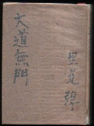

Classic story 古綺談・笑談・古小説 ..
(22)大道無門 （抜粋）
大正15年（昭和元年）、「婦人公論」に連載された文学小説。著者は里見 弓亨（さとみ とん）。この「大道無門」は、作家・有島武郎の情死事件がモデルになっているという。
菊池寛の「第二の接吻」(Ｔ14・文藝春秋)に続いて、文中に麻雀が登場する本邦２番目の小説。といっても麻雀について語られるだけで、対局場面はない。いうならこの時代の小説に麻雀に関するやりとりが出てくるという点がポイントというところ。

この小説は、紅葉の頃、函館湯本の宿の一室で、男３人と、もう一人足りないところを同じ宿に下卑と二人で湯治に来ていた美しい女性が麻雀をするという白緑紅（はくりょくこう）という章から始まっている。
もちろんこの白緑紅は白發中を表しているが、登場人物の中の小説家、、画家、役者の３人も現している。
ところが間違ひなく来るはずの、而も謂ふところの「かも」で、いつも大抵負けてばかり居る武内が、どうしたことか姿を見せないので、昨日は、着くなり、取り敢えず三人きりで勝負を争ったが、本来四人でやる遊戯に人数の足りないといふのは、なんとなく気乗りがしないものだった。
今朝・・・・、といっても起きたのがもう十一時近かったが、兎に角今朝からは番頭が暇で居るのをいゝ幸いに、生まれて肇めて牌を見るといふ人間に、可なり複雑な、おまけに用語が一々支那語で、ちょいと解りにくい規則を、よってたかって無理やりに憶え込ませ、四圏だけは卓を圍んでみた。
しかしまさか番頭の負けを取るわけにもいかず、結局「から」では面白くもない、というやうな次第で、折角ここまで出掛けて来たあての、ガラリとはずれてしまった三人は、昨日新橋驛を出てから、何遍繰り返したか知れない武内の不参を、またしても話題にしずには居られなかったのだ。
「誰か居ないかなア」
生え際もよく、髪は女にしてみたいほど黒くたっぷりと、而も素直なのを油っ気なしに左から巻き上げるやうに分けたのが濡れ光って、大していい男といふのではないけれど、それ故に三つ四つは若くみえようといふ内田が、得意の布袋腹をなで回しながら
「誰か素敵な美人かなんかで、一人ここに来て、麻雀がしたくってたまらない、なんてのがいないかなア。ねえ、どうだい、それなら少しくらいかもられたって、ずいぶん嬉しがっちまうんだがねえ」
（中略）
番頭の政吉は謂った。
「どういたしまして、かう見えましても、これでなかなかハイカラになりましたんで。現に、奥様、このころ流行る支那の・・・・」
「あゝ、麻雀？」
飯台に肩肘つき、やゝ居住まいを崩して向き直ったときに、豊かな血色のいゝ頬には、さも悪戯々々した微笑が堪っていた。
「但しつい先刻憶えたてのほやほや・・・・、どう？中たったでせう？」
「へえ」
政吉は煙管を持ったまゝの手を、思はず盆の窪へあてがって、その、キョロンとした眼を瞠った。
「・・・・あ、もう誰かからお聞きなさいましたんですね？」
「そんなこと聞かなくたってちゃんと判ってるわ」
（中略）
これでまァひとつ難関を切り抜けた、というやうな勇みに、思はず膝を乗り出して
「さやうなんです。実はあの連中に教えて頂きましたんですが、どうもお花牌なんぞと違ひまして、なかなか規則が面倒でして・・・・。然し、あれァ、すっかり飲みこんでしまったら、よほどまた趣味の深いものに違ひ御座いませんね」
「でも、よくそんなに早く憶えられたわねぇ」
「いや、まだ判りやぁいたしませんのですけれど・・・・。どうもご職業に似合わない、あの志摩さんて方が、ご親切な方でしてね。ああ御熱心に教へてくださるんじゃあ、なんだか悪くって、こっちも一生懸命憶えないわけに参りませんでしてね」
「さうお」
と目元に鷹揚な笑ひを見せて
「あ、志摩っての、あの人？。でも感心ね」
「へぇ、それに後からいらっしゃる筈のお連れ様が一方お見えンなりませんものですから、三人じゃあ面白くないんだから、なんでもかんでも憶えろ、なんて仰有いまして」
「それぁさうよ、三人じゃあ」
「あ、奥様、御存知でいらっしゃいますですか」
「麻雀？、知ってますとも、うまいもんよ」
「あ、さやうですか」
と大きく一つ頷いて、
「いえ、実はその麻雀で御座いますがね。どうもいろいろお断りいたしたんですけれど、なんでもかんでも手前に行って来いと仰有いますんで・・・・」
「何を？、どこへ行けって頼まれたの？」
「それがそうゥ・・・・、こちら様へ・・・・」
「えっ？、あたしんとこへ？」
「さようなんです。はじまりは、まァ志摩さんがなんか仰有ったんで御座いませう」
（中略）
「で、あんたが頼まれて来た大役とは一体なんなのよ」
「それがそのう、何しろ皆さん、気さくな面白い方たちなもんですから。それで兎も角手前に、麻雀を御存知ならなほのこと、御存知でなければトランプでもなんでも御退屈しのぎにお相手したいと思ふから、まことに失礼だけれど、お遊びにおいでくださるなり・・・・」
「あ、さうお」
と軽く受けて、更に思案する風もなく
「さうね、行ってもいいわ。遊びに行きませうか」
「さやうですか」
案ずるより生むが易いといふが、これはまたあまりの容易さに拍子がぬけて、いっそポカンとしてしまった。
（中略）
「さあ、お茶なんぞどうでもいいから、早く始めませうよ」
そんな風に自分からせき立てて早速かかった勝負事でも、万事テキパキしていて、なかなか大きな役を望む野心もあり、ひとの上がり札を抑へるやうな油断のならないところもあって、あたまの良さはそれだけでも知れた。
その上、勝負の間に利く無駄口に巧まない愛嬌があって、慎ましやかに部屋の隅の方に控えて居るお供の女中までが、どうかするとクスリと笑ったりしていた。勝負では始めのうちこそ大分負けがこんだが、八圏目の西風あたりから当たりが出て、結局勘定してみると、五百符ばかりの勝ちに廻っていた。
それが現金に換えられたときでも、少しの拘りも見せずに平気で受け取って、
「おそくなって眠い思いをさせたから、これは、お前さん、頂いとき」
と女中にやり、番茶を飲みながら暫く戦跡を語って一時近くに帰っていったのだが、それからまだ二十分と経ってはいなかった。